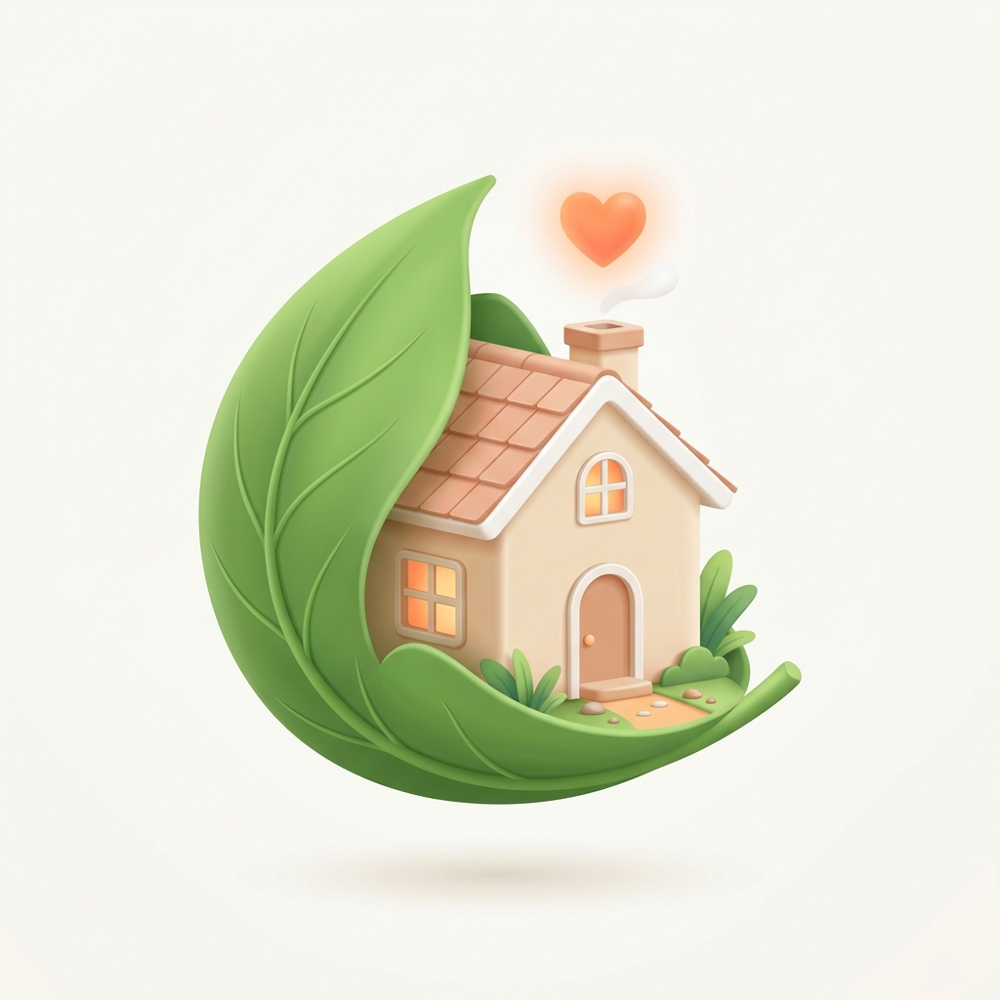
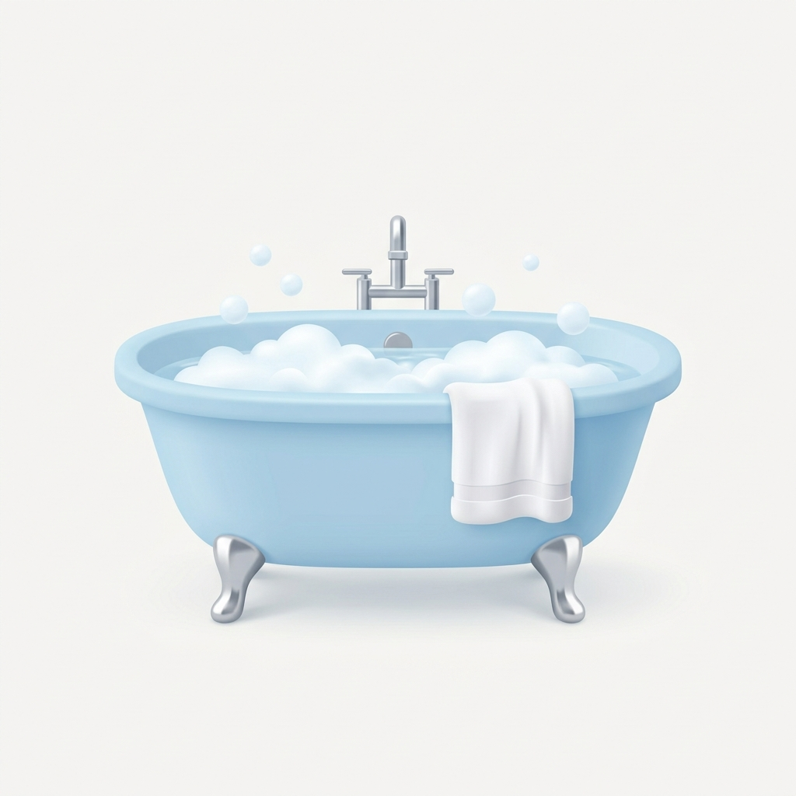
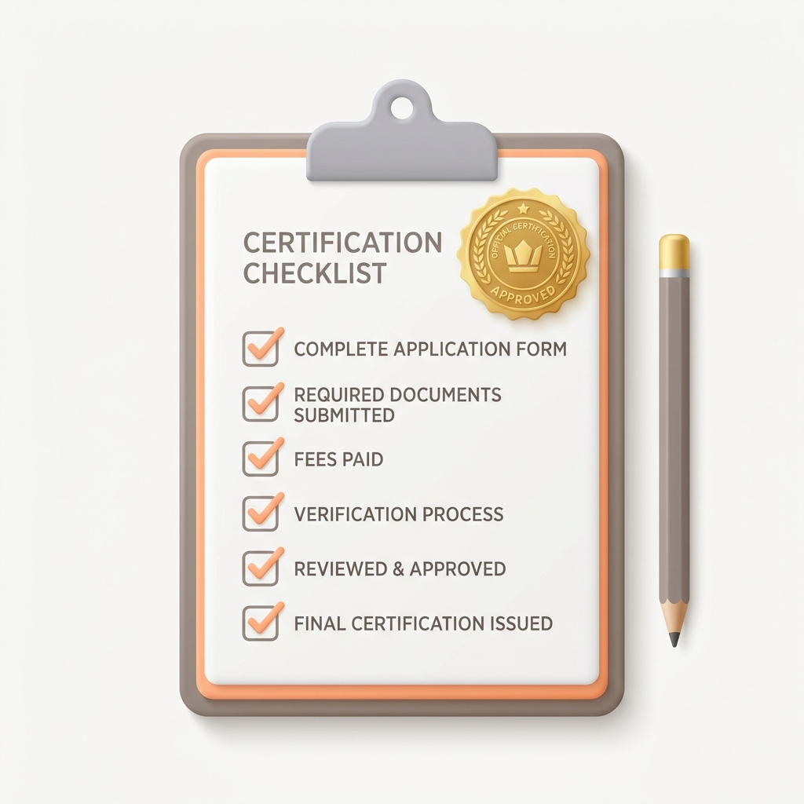

ABOUT US
가족의 마음으로 정성을 다해 모십니다.
가온복지센터는 고령이나 노인성 질병 등으로 일상생활을 혼자서 수행하기 어려운 어르신들의 든든한 동반자입니다. 단순한 가사 및 신체 활동 지원을 넘어, 어르신들의 자립생활을 돕고 보호자의 부양 부담을 덜어드리며 따뜻한 가족의 마음으로 보살펴 드립니다.
어르신의 행복한 노후
가온복지센터가 든든한 동반자가 되겠습니다.
복지
센터
가온복지센터의 발자취
한결같은 마음으로 어르신들과 함께 걸어온 가온복지센터의 연혁입니다.
주요 서비스 안내
어르신의 신체 상태와 일상생활 요구에 맞춰 가장 필요한 정성 어린 서비스를 제공합니다.

방문요양방문요양 (Home Care)
전문 교육을 이수한 요양보호사가 어르신의 가정을 직접 방문하여 편안한 여생을 지원합니다. (장기요양등급 소지자 대상)
- 신체활동 지원세면, 구강청결, 식사도움, 몸단장, 이동도움
- 가사활동 지원청소, 세탁, 식사 준비 및 장보기 대행
- 정서적 지원말벗 지원, 책 읽어드리기, 정서적 교감
- 일상생활 동행병원 내원 동행, 외출 지원

방문목욕방문목욕 (Home Bathing)
전문 요양보호사 2인이 1조가 되어 목욕 차량 또는 가정 내 목욕 장비를 활용하여 위생적으로 안전하게 목욕 서비스를 제공합니다. (장기요양등급 소지자 대상)
- 전문 요양보호사 2인 1조어르신의 미끄러짐 방지 및 응급 안전 확보
- 철저한 위생 관리피부 트러블 예방, 청결유지
- 혈액순환 촉진입욕 및 부드러운 맞춤형 세신
- 상태 관찰목욕 전후 혈압, 체온 측정 및 이상 유무 관찰

등급신청 대행등급신청 대행 (Application Helper)
국가지원 재가요양 서비스는 장기요양등급이 없으신 경우 혜택 적용 및 서비스 이용이 불가능합니다. 등급 판정 전 과정의 행정 절차를 상세히 도와드립니다.
- 장기요양 신청 절차 안내 및 상담신청 자격 요건 및 전 과정 상세 안내
- 서류 작성 및 접수 대행건강보험공단 신청 접수 지원
- 의사소견서 제출 지원협력 병의원 연계 및 소견서 발급 안내
- 맞춤 케어플랜 추천등급 판정 후 즉시 이용 가능하도록 지원
행복한 동행을 만드는 사람들
요양보호사, 사회복지사, 그리고 가온복지센터가 삼위일체가 되어 어르신을 성심껏 모십니다.
요양보호사
국가 전문 자격증을 취득한 돌봄 전문가로서 어르신의 가정에 직접 방문하여 신체 활동 지원(식사 도움, 이동 지원), 가사 지원(청소, 세탁), 정서적 교감 등 일상 생활 전반을 가장 가까이서 편안하게 돌봅니다.
사회복지사
어르신의 건강 상태와 인지 능력, 가정 환경 등을 확인하여 1:1 맞춤형 급여제공계획(케어 플랜)을 수립합니다. 정기적인 방문 모니터링으로 서비스 상황을 확인하며 보호자님과 긴밀히 소통합니다.
장기요양기관 (가온복지센터)
국가지원 장기요양보험 지정 기관으로서 등급신청서류 및 상담 진행, 우수 요양보호사 선발 및 직무 교육, 복지용구 연계 등 수준 높은 요양 서비스 품질 관리 인프라를 책임집니다.
이용 절차 안내
첫 상담부터 맞춤 요양 서비스 시작까지 가온복지센터가 꼼꼼하게 도와드립니다.
전화/방문 상담
대표 전화 또는 홈페이지를 통해 신청하시면 센터장 및 전담 사회복지사가 친절하게 상담을 진행합니다.
등급신청 지원
노인장기요양보험 등급이 없는 경우 공단 등급 신청 서류 작성부터 방문 심사 동행까지 전 과정을 대행합니다.
맞춤 케어 플랜 수립
어르신의 가정을 방문하여 건강 상태, 생활 환경, 심리 상태를 확인하고 개인별 맞춤 Care Plan을 설계합니다.
서비스 시작 및 관리
최적의 요양보호사를 매칭하여 서비스를 개시하며, 정기적인 모니터링을 통해 지속적으로 개선 및 만족도를 관리합니다.
가온복지센터만의 특별한 약속
왜 수많은 보호자분들께서 가온복지센터를 믿고 선택하실까요?
철저하게 검증된 전문 인력
국가 공인 자격증을 소지하고 인성 검사 및 건강 검진을 완료한 전문 요양보호사만을 엄선하여 파견하므로 안심하고 어르신을 맡기실 수 있습니다.
어르신 맞춤형 1:1 매칭
어르신의 성향, 건강 상태, 라이프 스타일을 고려하여 최적의 합을 이루는 요양보호사를 매칭해 감정 소모가 없도록 섬세하게 조율합니다.
정기 모니터링 및 실시간 소통
전담 사회복지사가 매월 정기 방문하여 어르신 상태를 관찰하고, 서비스 진행 과정을 전화상담 및 그 외 소통채널로 가족에게 상세하게 피드백합니다.
복지용구 연계 상담 지원
휠체어, 전동침대, 욕창 방지 매트리스 등 어르신의 안전하고 쾌적한 주거환경을 개선하기 위한 국가지원 복지용구 대여 및 구매 상담을 지원합니다.
서비스 대상자 안내
노인장기요양보험 혜택 및 가온복지센터 어르신 돌봄 서비스 이용 대상입니다.
65세 이상 어르신
거동이 불편하시거나 일상생활(식사, 세면, 외출 동행, 청소 등)에 다른 사람의 도움이 필요하신 어르신
- 식사 수발 및 복약 지도
- 세면, 목욕 및 청결 유지
- 병원 동행 및 가사 지원
65세 미만 노인성 질환자
65세 미만이시라도 치매, 뇌혈관성 질환(뇌졸중, 뇌출혈), 파킨슨병 등 노인성 질병을 앓고 계신 분
- 치매 어르신 인지자극 활동
- 뇌졸중/파킨슨 신체 재활 보조
- 정서적 지원 및 말벗 서비스
장기요양등급 소지자
국민건강보험공단으로부터 노인장기요양등급(1등급 ~ 5등급 및 인지지원등급)을 받으신 어르신
- 정부 지원으로 본인부담금 최소화
- 방문요양 / 방문목욕 서비스 수혜
- 복지용구 구매 및 대여 혜택
등급이 아직 없으신 분
장기요양등급이 없으셔도 가온복지센터에서 등급 신청부터 방문조사 준비까지 전 과정을 지원합니다.
- 서류 작성 및 공단 신청 대행
- 의사소견서 제출 지원
- 방문조사 시 대응 노하우 안내
이용자 후기
가온복지센터 서비스를 이용하신 어르신과 보호자 가족분들의 소중한 후기입니다.
인증서 & 현장 사진
가온복지센터의 공식 인증서와 현장 활동 사진을 확인하실 수 있습니다.
오시는 길
가온복지센터의 위치와 찾아오시는 길을 안내해 드립니다.
센터 주소
주소를 입력해 주세요.
상담 및 방문 문의
063-584-7072
평일 08:00 ~ 17:00 (17:00 이후 센터장 연결)
서비스 가능 지역
가온복지센터의 방문요양 및 방문목욕 서비스가 제공되는 전체 서비스 지역 안내입니다.
전북 부안군 전 지역 (13개 읍·면 100% 서비스)
어르신이 계신 곳 어디든 전문 요양보호사가 직접 방문합니다.
인접 시·군 관외 지역
부안군 경계 인접 시·군 지역도 서비스 이용이 가능합니다. 자세한 사항은 문의해 주세요.
- 김제시 (신태인, 원평 등 인접 지역)
- 정읍시 (고부, 소성, 영원 등 인접 지역)
- 고창군 (흥덕, 성내 등 인접 지역)
- 기타 전북 관외 지역 (사전 문의)
🧮 본인부담금 계산기
2026년 보건복지부 고시 기준 · 서비스 구분과 등급을 선택하면 자동으로 계산됩니다.
※ 요양: 최대 주 5회 이용 기본
※ 2026년 보건복지부 고시 단가 기준이며, 실제 청구액은 기관 상황에 따라 다를 수 있습니다.
※ 한도액 초과 이용분은 공단 급여가 적용되지 않아 100% 본인부담입니다.
간편 상담 신청
성함과 연락처를 남겨주시면, 담당 사회복지사가 2시간 이내에 직접 전화 드립니다.
Q&A
보호자분들께서 가장 많이 궁금해하시는 질문들을 모았습니다.